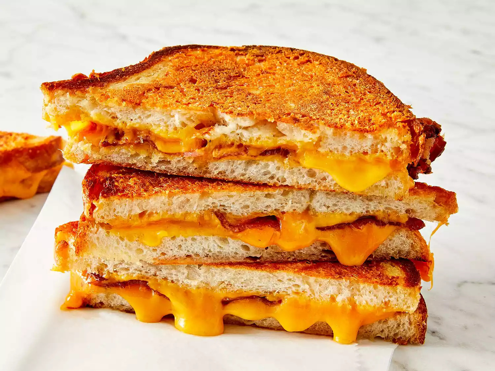

Grilled Cheese

Serving size: 4
Ingredients
- ¼ cup butter
- 1 cup freshly grated Parmigiano-Reggiano cheese
- 8 slices cooked bacon
- 4 slices Cheddar cheese
- 8 slices sourdough bread
Instructions
- Mash together butter and Parmesan cheese in a small bowl until evenly blended.
- Make sandwiches by placing two slices of bacon and one slice of Cheddar cheese on half of the bread slices. Top with the remaining slices of bread.
- Heat a large skillet over medium heat. Spread some of the butter mixture on the top of each sandwich. Place sandwiches butter side down in the skillet. Spread the remaining butter mixture on the other sides. Cook until golden brown on each side, about 3 minutes per side.
- To serve, cut in half diagonally.